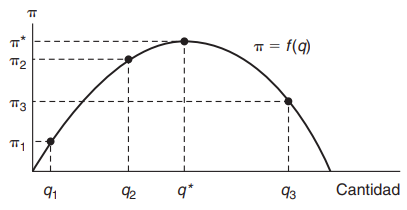
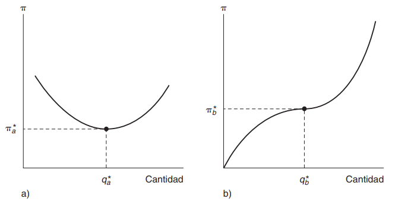

1 Maximización de una función con una variable
Comencemos con un ejemplo sencillo. Suponga que el administrador de un empresa quiere maximizar las ganancias que obtendrá de la venta de un bien determinado. Llamemos a estas ganancias \((\pi)\) que dependeran de la cantidad \((q)\) que venden de ese bien. Matemáticamente, esto es \[\pi = f(q)\]
La siguiente figura muestra una posible relación entre \(\pi\) y \(q\). Es evidente que para obtener la ganancia máxima, el administrador debe producir \(q^*\), con lo cual obtendrá \(\pi^*\) ganancias.

1.1 Derivada
La derivada de una función \(\pi = f(q)\) en el punto \(q_1\) se define como
\[ \frac{d\pi}{dq} = \frac{df}{dq} = \lim_{h\rightarrow 0}\frac{f(q_1+h) - f(q_1)}{h} \]
Observe que el valor de este cociente depende claramente del punto \(q_1\) que se elija.
En la figura anterior:
\[ \left.\begin{array}{c}\frac{d\pi}{dq} \end{array}\right|_{q = q_1} > 0 \]
mientras que
\[ \left.\begin{array}{c}\frac{d\pi}{dq} \end{array}\right|_{q = q_3} < 0 \]
¿Cuál es el valor de \(\frac{d\pi}{dq}\) en \(q^*\) ? Debería ser igual a cero, porque los valores de \(q\) inferiores a \(q^*\) tienen un valor positivo y los valores superiores a \(q^*\) tienen un valor negativo. La derivada es la pendiente de la curva en cuestión; es decir, esta pendiente es positiva a la izquierda de \(q^*\) y negativa a la derecha de \(q^*\). En el punto \(q^*\), la pendiente de \(f(q)\) es 0.
1.2 Condición de primer orden para el máximo
Este resultado es bastante general. Para que la función de una variable alcance su valor máximo en un punto, la derivada en ese punto (si existe) debe ser cero. En un punto óptimo (por decir \(q^*\)), se cumplirá que
\[ \left.\begin{array}{c}\frac{df}{dq} \end{array}\right|_{q = q^*} = 0\hspace{2cm} (1) \]
Sin embargo, la aplicación ingenua de esta única regla podría enganar. Por ejemplo, suponga que la función de ganancias tiene una de las formas que representa la figura de abajo a) o b)

Si la función de ganancias es la que muestra la figura a), entonces al producir donde \(\frac{d\pi}{dq} = 0\), elegiría el punto \(q_a^*\). Este punto de hecho, le proporcionará un mínimo y no un máximo de ganancias. Por otra parte, si la función de ganancias es la opción b) que se muestra en la figura, entonces el administrador elegiría el punto \(q_b^*\) que, si bien le ofrece una ganancia superior a la de cualquier nivel de producción inferior a \(q_b^*\), sin duda es inferior a cualquier punto producción superior a \(q_b^*\). Estas situaciones indican el hecho matemático de que \(\frac{d\pi}{dq} = 0\) es una condición necesaria para alcanzar un máximo, pero no es una condición suficiente. Para asegurarnos de que el punto elegido es, en efecto, un punto máximo, es preciso imponer una segunda condición.
1.3 Derivada de Segundo Orden
Se dice que la derivada de una derivada es la segunda derivada o derivada de segundo orden y se escribe así:
\[ \frac{d^2\pi}{dq^2}\hspace{0.2cm}o\hspace{0.2cm} \frac{d^2f}{dq^2} \hspace{0.2cm}o\hspace{0.2cm} f^{\prime\prime}(q) \]
Por tanto, la condición adicional para que \(q^*\) represente un máximo (local) es
\[ \left.\begin{array}{c}\frac{d^2\pi}{dq^2} \end{array}\right|_{q = q^*} = \left.\begin{array}{c}f^{\prime\prime}(q)\end{array}\right|_{q = q^*} < 0 \hspace{2cm} (2) \]
donde la notación nos recuerda, de nueva cuenta, que se debe calcular esta segunda derivada para el punto \(q^*\).
Con base en lo anterior, aun cuando la ecuación (1) es una condición necesaria para alcanzar el máximo, se debe combinar con la ecuación (2) para asegurarnos de que el punto es un máximo local de la función. Por tanto, las ecuaciones (1) y (2) juntas son, condiciones suficientes para alcanzar este máximo.